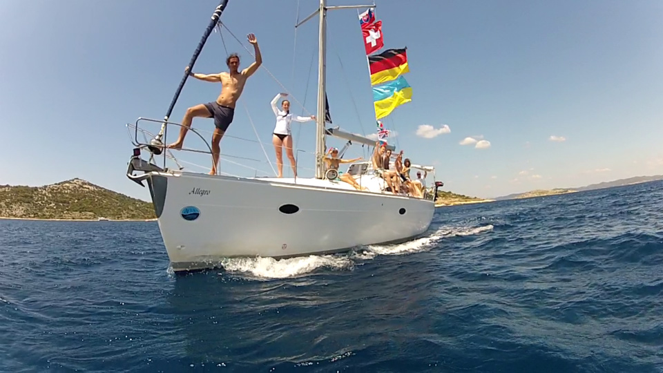
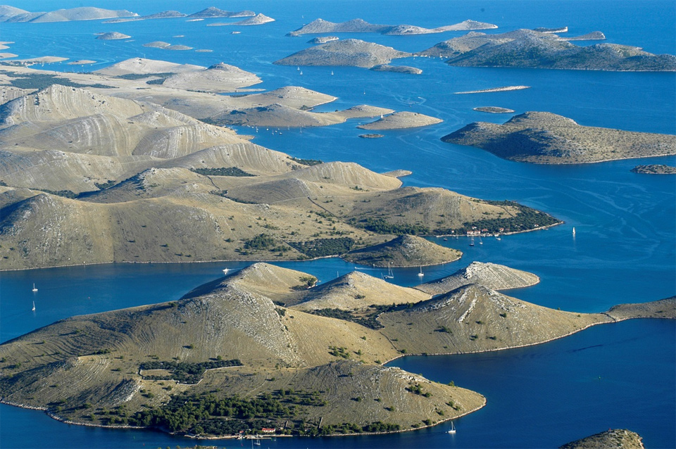
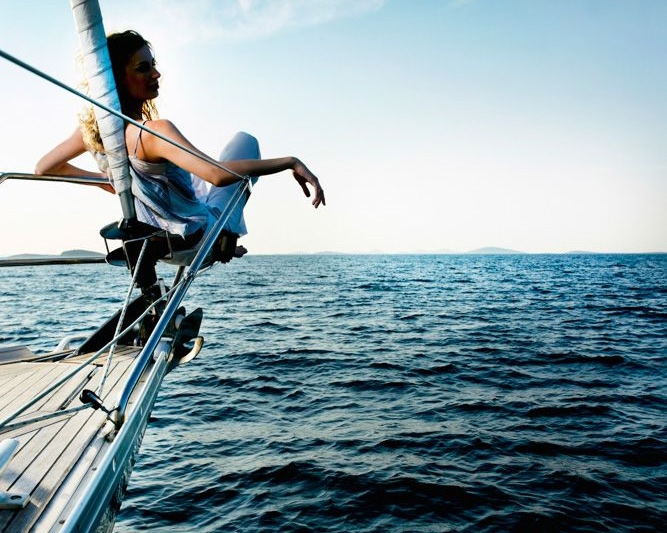

Welcome to the World of Sailing
Sailing has been around for travel and fishing, but it’s only become a sport since the early 17th century. The Dutch are said to be the first nation who raced yachts for fun. They gave a ship to Charles II and the sport quickly became popular in England before being taken up in America.
Up until the second half of the 20th century, yachting was a luxury sport for the rich. However, during the 1950s and 60s, new materials became available – such as plywood – which made boat construction easier and cheaper than ever before, making the sport more accessible to everyone.
Today, it is a pastime enjoyed by millions of people worldwide – both competitively and non-competitively on lakes and rivers to the wide open ocean.
10 reasons for sailing

1. Big blue. Biggest (and most beautiful!) playing field in the world: the sea.
2. Learn something new. The sense of pride and achievement that comes with learning to sail is priceless. There is really nothing like the feeling of becoming the master of your own boat. Whether it’s a 22 feet sailing boat or a motorboat on a local lake, or a massive ocean cruiser, skippering a boat is a great achievement. Everyone, from elementary schoolchildren to grandparents and even great-grandparents can learn to sail!
3. Unique experiences. No matter how many times you set sail, you will never have the exact same experience. Every trip provides the opportunity to see new and never seen places. Even if you want to revisit last year’s destination, the islands are ever-changing with many different activities to try and places to see. Be sure to snap some photos!

4. Various destinations. What you experience depends largely on where you sail, so choosing your destination is an important factor. An advantage of sailing is that you can visit multiple destinations in one trip. If you choose to sail to Croatia, you can visit many islands, bays and harbours in a week.
5. Good company. It’s a perfect activity to share with family and friends of all ages. Many crucials problems have been solved by sailors talking late into the night in the cockpit–unfortunately, they never seem to remember those solutions in the morning. But that’s no matter–a sailing trip is one of the best bonding experiences ever, bringing friends and family closer, and turning perfect strangers into lifelong pals. Speaking of those you love most, sailing is the ultimate way to spend quality time with family or friends on your vacation. Unlike traditional destinations, you can be secluded on your yacht as well as try new activities to create lasting memories together . You won’t be bothered by tons of tourists when you set sail, and if you go as a group, you can split the cost for a budget-friendly getaway.
6. Solitude. On the other hand, sailing is also great opportunity to spend some time alone. Leave the noise, confusion, and stress of the world behind for few days, or few weeks, and experience the freedom of solitude.

7. Relaxation time. The best feature of a yachting vacation is the time to relax. Sailing can be relaxing, whether you are soaking the sun, lying in your hammock or enjoying the beautiful sunset evening you will charge your battery for sure.
8. Group sailing - Flotilla. Seeing new places is a huge part of the attraction of sailing. As your sailing skills improve, you’ll have more and more confidence and opportunity to explore new places, including all of the amazing flotilla destinations around the Adriatic. The sailing community is fantastic, and you’re bound to meet wonderful sailors no matter where you go.
9. Finding places with ZERO cell phone reception. Sure, these days you can sometimes still get 5 bars in the middle of the sea. But sailing is one of the few ways where you can let your mind wander in the relative peace and quiet of the wind and waves.
10. Happiness. You’ll get both mental and physical workout on the water! Finally, sailing will bring more happiness into your life without a doubt. Ready to weigh anchor and set sail now? Enjoy time with those you love, doing what you want, when and where you want to. Contact Asta Yachting and let us prepare your dream vacation, or book your sailing vacation right away!